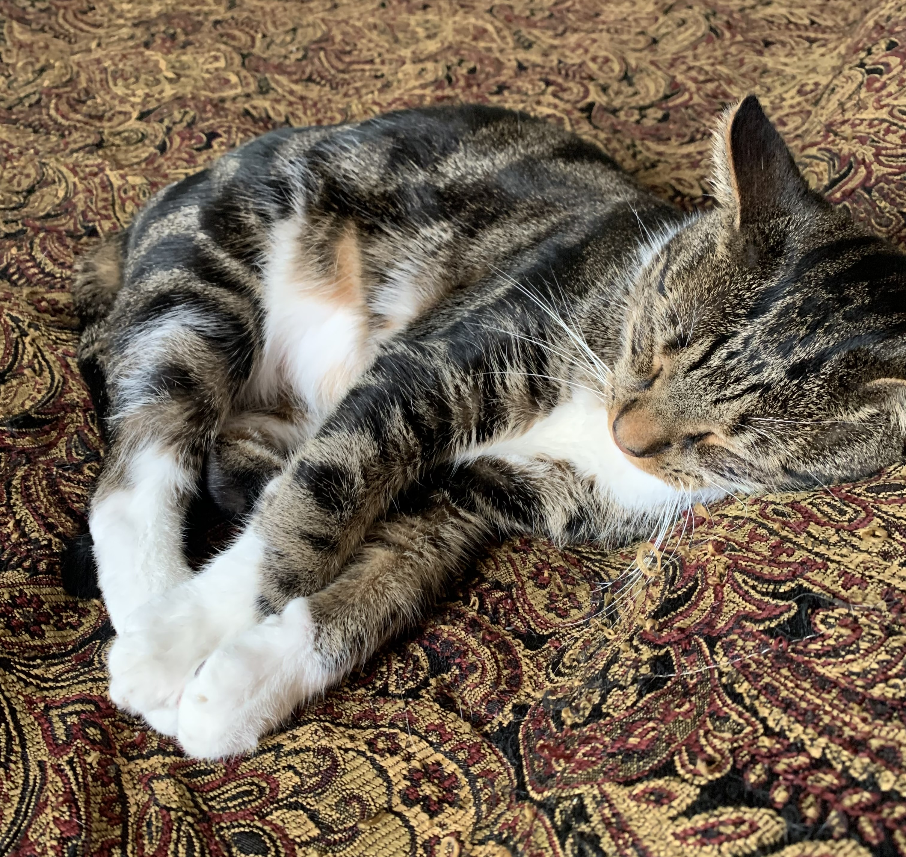
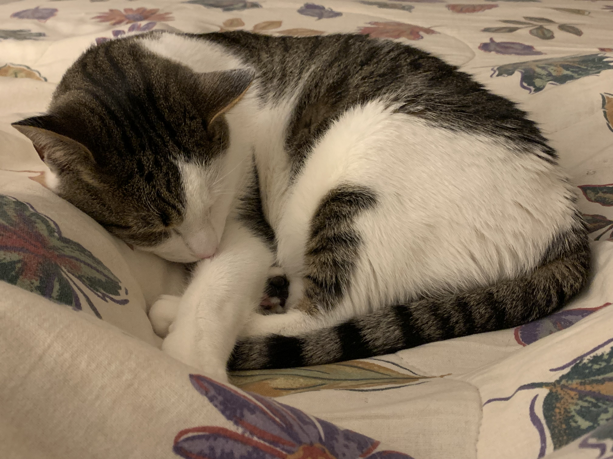

Personal
I found out about Drexel's User Experience and Interactive Design program during my first co-op at Comcast Corporation when I used to be a psychology major. In the Comcast Technology Center, there is an exhibition called The Universal Sphere where the public can go through a fun and interactive cinematic experience. I was told that UXID co-ops helped work on this exhibit and wanted to know more. After extensive research and talking to many staff at the Antoinette Westphal College of Media Arts and Design, I took a gap semester and officially changed my major.
Outside of my academic and professional life, I pursue many hobbies such as painting, reading, taking pictures, enjoying nature, and exploring the city of Philadelphia! I am also a huge foodie and love to try new things.
 I own two loving cats named Cal and Boots. They are both three years old. My family adopted these two loving brothers from a farm that my sister's friend owns. From stray barn kittens to domesticated house life, my cats have never failed to not entertain me from their silliness. Since I visit home about once a month, my tolerance for cats has gone down and I seem to have developed an allergy to dander! With the help of super strong allergy medication, nothing can stop me from using my cats as furry fluffy pillows to cuddle at night.